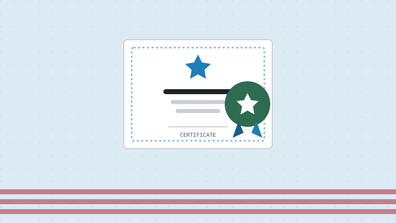

What to Bring to Your Oath Ceremony
Updated July 2026 · 3 min read · Ciudadano Ready Team

The oath ceremony is the finish line: the moment you actually become a U.S. citizen. It's also an easy day to show up under-prepared, since by the time you reach it, the interview and testing are already behind you and it's tempting to stop paying close attention to the details. Here's what to have ready.
What to bring
- Form N-445, completed. If your ceremony is scheduled for more than a day after your interview, you'll need to answer the questions on the back of this notice before you arrive.
- Your Green Card. You'll surrender it at the ceremony; you won't need it anymore once you're a citizen.
- A government-issued photo ID such as a driver's license, passport, or state ID.
- Any Reentry Permits or Refugee Travel Documents you hold, valid or expired, along with any other immigration documents USCIS has issued you.
- Military discharge papers (DD-214), if you served and were discharged.
What to wear
USCIS asks attendees to dress in a way that respects the occasion: shorts, jeans, and flip-flops are specifically discouraged. Think of it the way you'd dress for a courthouse appointment or a graduation: neat and presentable, nothing fancy required.
When to arrive
Plan to arrive early: up to an hour before your scheduled time is common, since check-in and eligibility verification take time, and seating for the ceremony itself is often first-come, first-served.
What happens at the ceremony
After check-in, an officer verifies your paperwork and collects your Green Card. You'll then recite the Oath of Allegiance as a group, and at the end of the ceremony you receive your Certificate of Naturalization: the official proof of your U.S. citizenship.
Right after you become a citizen
A few things are worth doing soon after your ceremony: applying for a U.S. passport, registering to vote, and updating your name and citizenship status with the Social Security Administration if anything changed. None of these are required immediately, but taking care of them early means one less thing to think about later.
This article is for general information only and is not legal advice. For guidance on your specific case, contact a licensed immigration attorney.